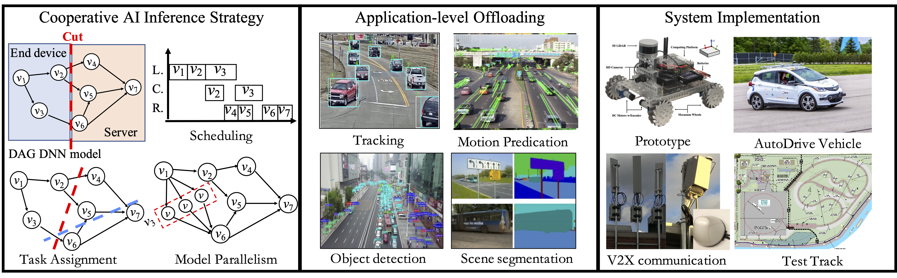
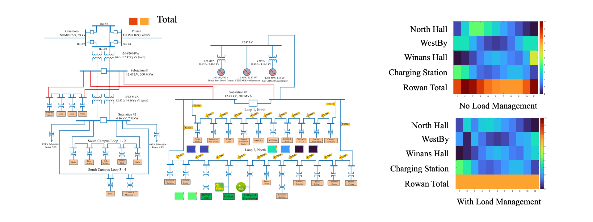

Research Overview
The rapid growth in pervasive Internet of Things (IoT) and Deep Learning (DL) is creating a huge demand for applying DL to IoTs. However, IoTs impose capacity bottlenecks on State-of-the-Art (SOTA) DL technology, and thus, high-performance and low-latency DL services are challenging to provide. As a result, new methods are urgently needed to meet the demand from the DL-empowered IoTs.
Collaborative AI Inference
state-of-the-art DNN typically consists of many hidden layers with millions of model parameters to enable a high level of abstraction and high accuracy. For example, VGGNet and ResNet, which respectively have millions parameters, are widely used as backbone architectures in deep learning solutions. Recent GPT-3 has 175B parameters. Complicated DNNs can improve performance but cause computation burden for IoT devices at the same time. Computation offloading is a promising strategy to provide high-accuracy and real-time services in the 5G era. With high-resolution sensors, IoT devices now generate data at a very high speed (e.g., 3 Gbit/s (∼1.4 TB/h) to 40 Gbit/s (∼19 TB/h). Such massive amount of offloading traffic exceeds communication capacity. Latency measurements from real testbeds also indicate high latency in offloading communication. This project will develop a cooperative AI inference mechanism under the emerging edge computing paradigm. A layer-wise cooperative DNN computation offloading optimization is proposed, and the corresponding task assignment and schedule optimization will be developed. The proposed research can dynamically adjust cooperative computation strategy to best utilize available computation and communication resources and thus provide low latency inference.

|
|
Multi-Agent Energy Management Optimization
Intelligent decision making is a key driving factor for future IoT systems. Today, network entities in IoT systems are able to not only sense the current state of the environment (e.g., sensing room temperature) but also take corresponding actions (e.g., turning the thermostat on or off) to maximize long-term rewards (e.g., keeping the room temperature at a target value or limiting the electricity demand below a certain level). Reinforcement learning algorithms have been used efficiently to enable network entities to obtain the optimal policy (e.g., decisions or actions) given their states when the state and action spaces are small. These algorithms, however, have faced significant challenges when dealing with high-dimensional environments. The recent development of deep learning has enabled deep reinforcement learning (DRL) methods to drive optimal policies for sophisticated and capable agents, which can outperform conventional rule-based operation policies such as in these challenging environments. Existing DRL studies mainly focus on simulated environments such as video games, and centralized training environments such as natural language processing. However, in IoT scenarios, multiple smart entities usually interact in a shared environment and make decisions at the same time. Therefore, the PI plans to address IoT system operation optimization with DRL with a focus on multi-device environments.

|
|
Bikesharing Rebalancing Optimization
In shared mobility systems research, there is increasing interest in the use of reinforcement learning (RL) techniques for improving the resource supply balance and service level of systems. The goal of these techniques is to effectively produce a user incentivization policy scheme to encourage users of a shared mobility system (e.g. bikeshare systems) to slightly alter their travel behavior in exchange for a small monetary incentive. These slight changes in user behavior are intended to over time increase the service level of the shared mobility system and improve its profit margin. Reinforcement learning techniques are gaining popularity as an approach to solve this problem, as they can utilize deep learning for tasks that require many actions and produce a cumulative noisy reward signal. A reinforcement learning policy can be used to provide many incentives to users and then receive the service level of the target mobility system over time as a reward signal. We present an analysis and results of our extensive study on the effects of different frameworks for representing a shared mobility system on reinforcement learning performance for user incentivization, in terms of service level. We utilize bikeshare trip-data from Washington D.C.’s Capital Bikeshare system between 2015 and 2019 in our experiments to produce data-driven simulations for experimentation. In analysis, we show the relationship and effects on service level of user volume / mobility needs, resource supply availability, and incentivization budget. Further, we analyze the effectiveness of various reinforcement algorithms and various framework approaches.

|
|